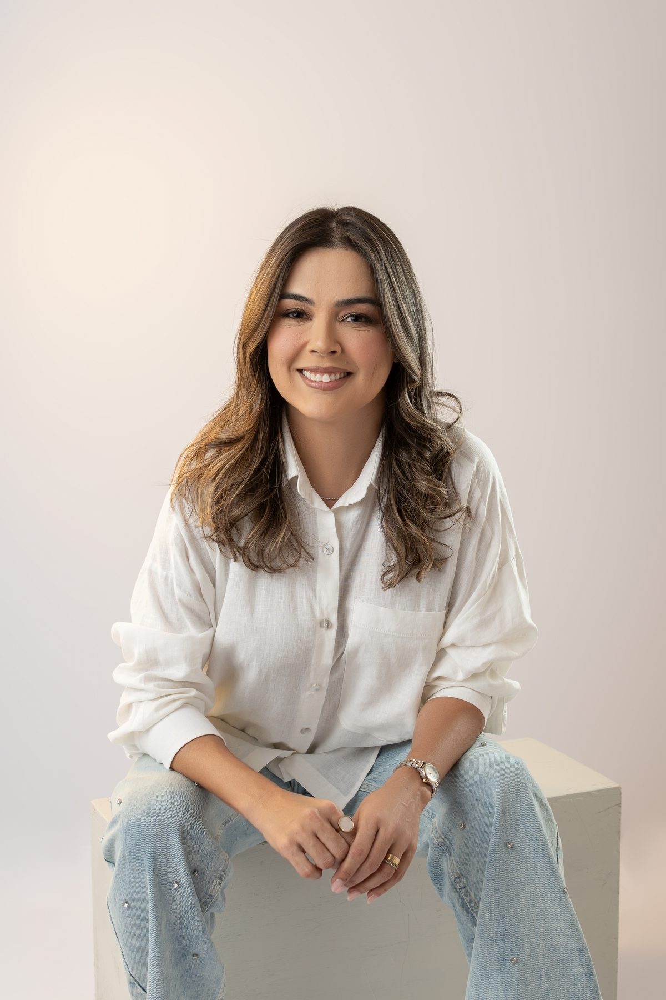

O cuidado que acolhe os pequenos e traz paz aos pais.
Acompanhamento humanizado e focado em prevenção para bebês, crianças e gestantes de Tucuruí, Novo Repartimento e Tailândia. Atendimento presencial, online ou domiciliar — com a segurança de uma médica com vivência em urgência, emergência e UTI pediátrica.

Experiência
Vivência em UTI e Emergência Pediátrica
Por que as famílias escolhem a Dra. Flávia?
Consulta sem pressa, escuta ativa e uma trajetória construída em urgência, emergência e UTI pediátrica.
Consulta Sem Pressa
Nada de atendimentos corridos de 15 minutos. O tempo necessário para investigar a fundo o desenvolvimento da criança e ouvir todas as dúvidas dos pais.
Suporte Pós-Consulta
O cuidado não acaba quando a consulta termina. Canal direto para dúvidas sobre prescrições e acompanhamento de sintomas, com tranquilidade no dia a dia.
Acolhimento Sem Infantilizar
A ida ao consultório vira um momento tranquilo, com diálogo amigável e respeito ao tempo de cada criança — sem perder a seriedade clínica.
Seu bebê está atingindo os marcos esperados?
Selecione a faixa etária do seu filho e marque os comportamentos que ele já apresenta para acompanhar a evolução motora e cognitiva.
Marque o que ele já realiza:
🎉 Excelente! Seu bebê completou todos os marcos principais listados para esta idade.
✨ Ótimo progresso! O desenvolvimento de cada bebê é único. Converse com a Dra. Flávia para orientações específicas.
Mala de Maternidade: O Guia Completo
Baseado no material exclusivo da Dra. Flávia Wanderley. Organize os itens indispensáveis para a chegada do bebê.
📋 Documentos
🤰 Para a Mamãe
👶 Para o Bebê
Sua Mala de Maternidade
A Dra. Flávia recomenda deixar tudo pronto até a 36ª semana!
/
Itens Conferidos
Cuidado personalizado para cada fase
Consultas presenciais em três unidades, além de atendimento online e domiciliar.
Puericultura Completa
Acompanhamento contínuo do crescimento e desenvolvimento do bebê, garantindo tranquilidade aos pais.
Consultas de Rotina
Acompanhamento preventivo de crianças em idade escolar, para um crescimento saudável.
Acompanhamento Pré-Natal
Orientações no terceiro trimestre sobre amamentação e os primeiros dias do bebê.
Consulta Sem Sair de Casa
Ideal para dúvidas rápidas, acompanhamento ou visita domiciliar a recém-nascidos e crianças doentes.
CRM-PA 19569
Sua médica de confiança no Pará
Dra. Flávia Wanderley
Médica dedicada à saúde da primeira infância e à maternidade
Minha paixão profissional é transformar o atendimento de bebês e crianças em uma experiência acolhedora, pautada no afeto e no acolhimento completo da família.
Após anos de dedicação em Urgência, Emergência e Unidades de Terapia Intensiva (UTI) Pediátrica, trouxe toda essa bagagem técnica para o consultório particular, permitindo um acompanhamento contínuo de alta qualidade.
Em Tucuruí, Novo Repartimento e Tailândia, realizo consultas que combinam atenção técnica e humanização — tratando cada criança com o tempo e o respeito que sua individualidade exige.
Conteúdos para Pais e Mães
Dicas práticas sobre saúde infantil e maternidade para guiar sua jornada.
Com quantos dias levar o bebê à primeira consulta?
Entenda a janela recomendada e o que é avaliado nessa primeira visita.
Criança com tosse que não passa?
Quando a tosse é sinal de algo que merece avaliação, e como aliviar com segurança em casa.
Mala de maternidade: o checklist completo
O que levar para a maternidade sem esquecer nada — para a mamãe e para o bebê.
Mais artigos em breve — acompanhe pelo Instagram @dra.flaviawanderley.
Selecione suas preferências de atendimento
Preencha as informações básicas para nossa equipe confirmar os horários disponíveis pelo WhatsApp.
* Este formulário registra suas preferências para agilizar a triagem. Nossa equipe responde indicando os horários oficiais disponíveis.
Perguntas Comuns
Respostas claras para as dúvidas mais comuns sobre consultas e rotina de cuidado infantil na região.
Tente outros termos ou fale com nossa recepção.
Três unidades, e também online ou em casa
Clínica Tucuruí
Av. Raimundo Veridiano Cardoso, 83
Tucuruí – PA
Segunda a Sexta · 9h às 17h
(94) 99173-6176
Falar no WhatsAppNovo Repartimento
Tv. Monte Carmelo, 07
Novo Repartimento – PA
Agenda especial · consultar horários
(94) 99222-4366
Falar no WhatsAppTailândia
Travessa das Mangabeiras, 21
Tailândia – PA
Consultar horários
(91) 99209-5534
Falar no WhatsAppConsulta Online
Ideal para dúvidas, acompanhamento e avaliações iniciais — (94) 99173-6176
Atendimento Domiciliar
Perfeito para recém-nascidos e crianças doentes — (94) 99173-6176